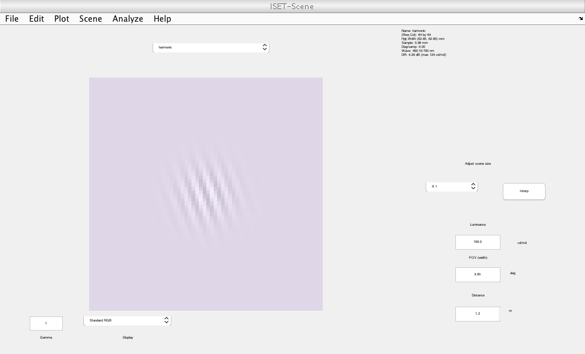
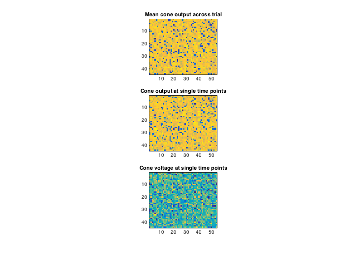
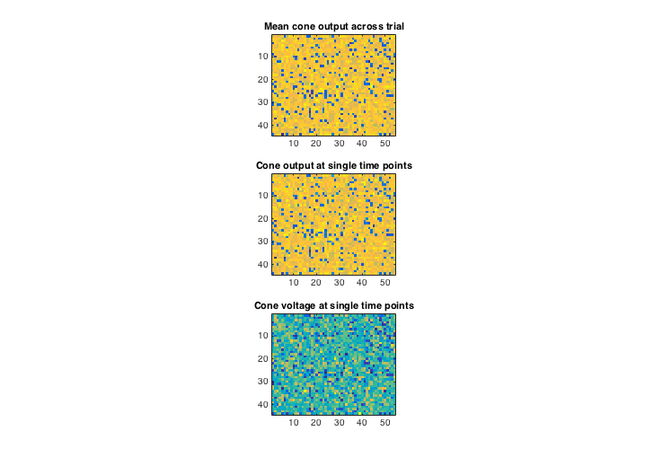
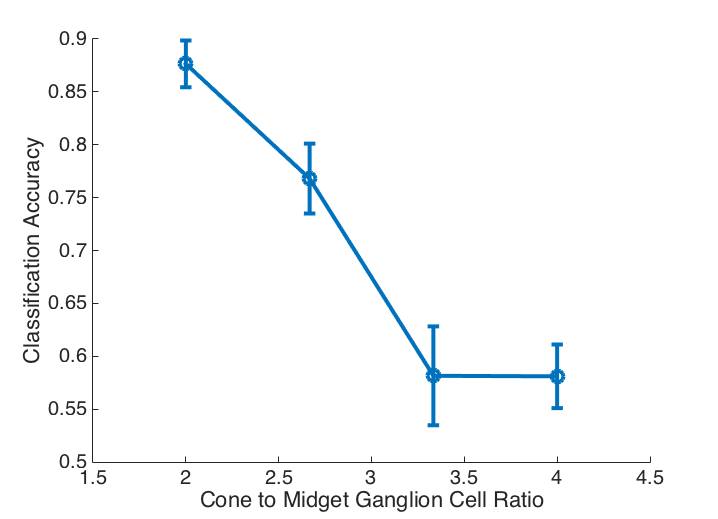

Contents
- t_orientedGaborDiscrimination
- Specify parameters for contrast values and noise repititions
- Initialize the optics and the sensor
- Loop over two stimulus classes and repeated trials and compute cone responses
- Train linear SVM and find cross-validated accuracy
- Save
- Classifiy
- Plot classification accuracy as function of convergence ratio
t_orientedGaborDiscrimination
Model cone responses for the experiment on measuring orientation discrimination thresholds of an acrhomatic, peripheral Gabor by Marisa Carrasco and Jon Winawer.
Script outline: 1. Build scene as an achromatic Gabor patch with imageHarmonic. 2. Build oi and sensor with specified properties (eccentricity, etc.) 3. Loop over 2 stimulus orientations and n trials per orientation 4. Within each trial, add eye movements to sensor 5. Build the outer segment object with linear filters and compute its response with the sensor structure. 6. Sum the response over time for each cone as a cheap way to simulate downstream temporal integration of cone outputs 7. Save the cone response as they are time consuming to compute 8. From the saved cone file, compute simplified RGC outputs by convolution (DoG) and subsampling 9. Compute linear discriminant of stimulus orientation using cone outputs and RGC outputs
JRG/NC/BW ISETBIO Team, Copyright 2015
clear ieInit plotConeResponseFlag = true; % plot an example movie of cone responses during one trial saveConeCurrentsFlag = true; % save cone responses across all trials (after temporal integration within trials)
Specify parameters for contrast values and noise repititions
% Specify angles of Gabor stimulus orientation angleArr = (pi/180)*[-20 20]; nAngles = length(angleArr); % Specify retinal location where stimulus is presented (6 deg above fovea) locationRadius = 6; % degrees of visual angle locationAngle = 0; % degrees of polar angle (0 is vertical) % Number of trials per stimulus condition nTrials = 50; % Eye movement function handle % random jitter fun{1} = @(n) randn(n, 2)*2; % directional drift fun{2} = @(n) (1:n)' * [1 0]; % square wave oscillation fun{3} = @(n) square((1:n)/params.n*2*pi*5)' * [1 0]; eyePosFun = fun{1}; % Basic human optics parameters. oi = oiCreate('wvf human');
Initialize the optics and the sensor
% Set parameters for building the scene/oi/sensor The % stimulus consists of an achromatic Gabor patch at +/- 20 deg. % stimulus parameters %params = paramsGaborColorOpponent(); params.fov = 1.5; % Gabor is windowed with 1.5 deg aperture params.freq = 6*params.fov; % ... and has spatial frequency of 6 cpd params.GaborFlag = .25/params.fov; % ... and std of .25 deg params.nSteps = 100; % 100 time steps (1 ms sampling) params.ecc = 6; % 6 degrees eccentricity params.contrast = .25; % Max contrat of 0.25 params.expTime = 0.001; params.timeInterval = 0.001; params.meanLuminance = 100; % We build a dummy scene here just so we can subsequently calculate % the sensor size. But this scene itself is not used. Rather we % build the scene below. scene = sceneCreate('harmonic', params); scene = sceneSet(scene, 'h fov', params.fov); coneP = coneCreate; % The cone properties properties sensor = sensorCreate('human', coneP, [locationRadius(1) locationAngle(1)]); sensor = sensorSetSizeToFOV(sensor, params.fov, scene, oi); sensor = sensorSet(sensor, 'exp time', params.expTime); % 1 ms sensor = sensorSet(sensor, 'time interval', params.timeInterval); % 1 ms % This computes with sensor and photon noise sensor = sensorSet(sensor,'noise flag',2);
Loop over two stimulus classes and repeated trials and compute cone responses
storedConeCurrents = cell(1,nAngles); for angleInd = 1:nAngles % fprintf('\n'); % Comment out for publishing % We render a new scene for each stimulus orientation (but not for % repeated trials for the same orientation). We also pad the scene % field of view by factor padFactor so that eye movements do not cause % the sensor to move out of the scence field of view padFactor = 2; theseParams = params; theseParams.ang = angleArr(angleInd); theseParams.freq = params.freq * padFactor; theseParams.GaborFlag = params.GaborFlag / padFactor; scene = sceneCreate('harmonic', theseParams); scene = sceneSet(scene, 'h fov', params.fov*padFactor); % Compute optical image - also computed once per stimulus class (not % re-computed for new trials within a stimulus class) oi = oiCompute(oi, scene); % Loop over trials. Each trial gets its own eye movments. for trial = 1:nTrials
% fprintf('.'); drawnow(); % Comment out for publishing % Eye position in units of number of cones eyePos = eyePosFun(params.nSteps); % Loop through frames to build movie volts = zeros([sensorGet(sensor, 'size') params.nSteps]); for t = 1 : params.nSteps % Compute absorptions sensor = sensorSet(sensor, 'positions', eyePos(t, :)); sensor = coneAbsorptions(sensor, oi); volts(:,:,t) = sensorGet(sensor, 'volts'); end % t % Set the stimuls into the sensor object sensor = sensorSet(sensor, 'volts', volts);
Train linear SVM and find cross-validated accuracy
Create the outer segment object
os = osCreate('linear'); % Compute the photocurrent for the whole time series os = osCompute(os, sensor); coneCurrentSignal = sum(osGet(os, 'conecurrentsignal'),3); params.coneArraySize = size(coneCurrentSignal); storedConeCurrents{angleInd}(trial,:) = coneCurrentSignal(:); % visualize cone response for an example trials if plotConeResponseFlag && trial == 1 vcAddObject(scene); sceneWindow; vcNewGraphWin; coneCurrentSignal = osGet(os, 'conecurrentsignal'); subplot(3,1,1) imagesc(mean(coneCurrentSignal,3));axis image title('Mean cone output across trial'); for ii = 1:params.nSteps subplot(3,1,2) imagesc(coneCurrentSignal(:,:,ii)); axis image title('Cone output at single time points'); subplot(3,1,3) imagesc(volts(:,:,ii)); axis image title('Cone voltage at single time points'); pause(0.1); end % nSteps end  
end end %angleInd
Save
coneData = [storedConeCurrents{1}; storedConeCurrents{2}];
labels = [ones(nTrials,1); -1*ones(nTrials,1)];
dataPth = fullfile(fileparts(which(mfilename)), 'data');
if saveConeCurrentsFlag
fname = fullfile(dataPth, sprintf('coneResponses%s.mat', datestr(now, 'YYYY-mm-DD_HH.MM.SS')));
save(fname, 'coneData', 'labels', 'params', 'eyePosFun');
end
Classifiy
d = dir(fullfile(dataPth, '*.mat')); [~,idx] = sort([d.datenum]); load(fullfile(dataPth, d(idx(end)).name)); % Fit a linear svm classifier between two orientations and calculate % cross-validated accuracy based on model % -------- first for cone signals --------------------------------------- m = fitcsvm(coneData, labels, 'KernelFunction', 'linear'); cv = crossval(m,'kfold',5); rocAreaCones = 1-kfoldLoss(cv); % -------- then for RGC signals ----------------------------------------- % RGC hack - bandpass filter and subsample % RGC is a strucutred array. Each element corresponds to one model of RGCs. % The model is defined by a spatial receptive field 'rf' and a subsampling % rate 'ss'. The output of the RGCs are stored in 'data'. The inputs come % from the cone outputs. rgc = struct('ss', [], 'rf', [], 'data', []); % We will make several RGC classes defined by scaleFactor, which will scale % both the receptive field size and the subsampling rate (the bigger the % RF, the more coarsely we subsample). scaleFactor = linspace(2,4,4); for ii = 1:length(scaleFactor) % Center surround RF. The receptive fields have an excitatory center % with std of 1 cone * scaleFactor. The inhibitory surround has twice % the sd of the center. The cell is balanced, so that the sum of center % minus surround = 0. rfCenter = fspecial('Gaussian', 20,scaleFactor(ii)); rfSurround = fspecial('Gaussian', 20,2*scaleFactor(ii)); rgc(ii).rf = rfCenter - rfSurround; rgc(ii).subsample = scaleFactor(ii); end % Load stored cone data coneData = reshape(coneData, [], params.coneArraySize(1), params.coneArraySize(2)); % Loop across RGC types nBtsrp = 20; rocAreaRGC = NaN(nBtsrp, length(rgc)); for ii = 1:length(rgc) ss = rgc(ii).subsample; rf = rgc(ii).rf; % Loop across trials, extracting RGC signals by convolution + subsample for trial = 1:size(coneData,1) coneCurrentSignal = squeeze(coneData(trial,:,:)); tmp = conv2(coneCurrentSignal,rf, 'valid'); tmp = tmp(round(ss:ss:end),round(ss:ss:end)); rgc(ii).data(trial,:) = tmp(:); end % Classify RGC outputs for btstrp = 1:nBtsrp % scrambled = labels(randperm(length(labels))); m = fitcsvm(rgc(ii).data, labels, 'KernelFunction', 'linear'); cv = crossval(m,'kfold',5); rocAreaRGC(btstrp, ii) = 1-kfoldLoss(cv); end end fprintf('ROC Area for cones: %4.2f\n', rocAreaCones) for ii = 1:length(rgc); fprintf('ROC Area for RGC class %d: %4.2f\n', ii, mean(rocAreaRGC(:,ii))) end
ROC Area for cones: 0.88 ROC Area for RGC class 1: 0.88 ROC Area for RGC class 2: 0.77 ROC Area for RGC class 3: 0.58 ROC Area for RGC class 4: 0.58
Plot classification accuracy as function of convergence ratio
fH = vcNewGraphWin; set(fH, 'Color', 'w') set(gca,'FontSize',20); hold on errorbar(scaleFactor, mean(rocAreaRGC), std(rocAreaRGC),'o-', 'LineWidth', 4, 'MarkerSize', 12) xlabel('Cone to Midget Ganglion Cell Ratio') ylabel('Classification Accuracy')